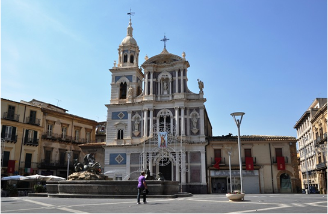
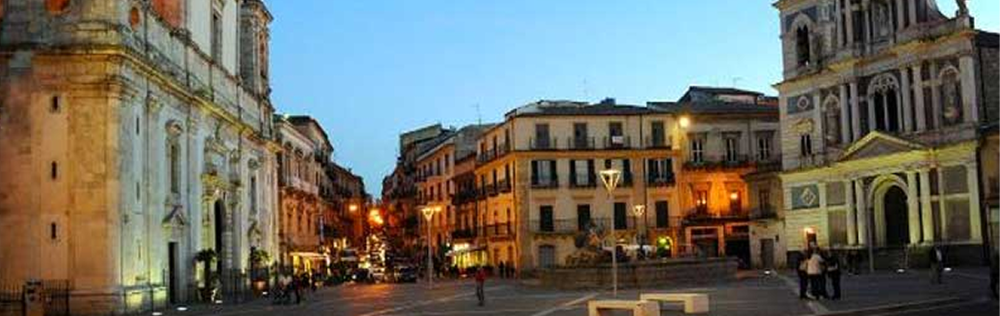
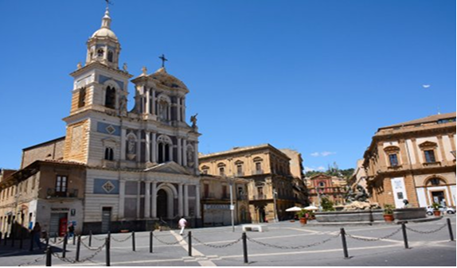
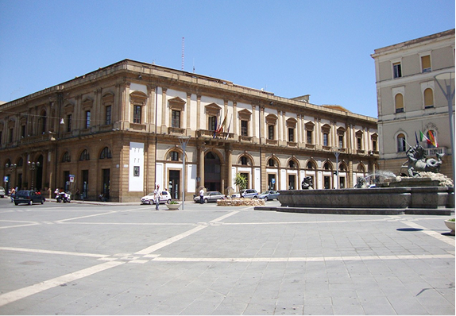

Il centro pulsante di Caltanissetta
Nell’entroterra siciliano situata all’incrocio tra Corso Umberto I e Corso Vittorio Emanuele, due delle vie più importanti della città. Con la sua forma quadrilatera, questa piazza è un punto di incontro fondamentale per cittadini e visitatori e riflette la ricca storia urbana di Caltanissetta.
Al centro della piazza si trova la Fontana del Tritone, opera in bronzo realizzata nel 1890. La fontana raffigura un tritone intento a domare un cavallo marino circondato da creature mitologiche, rappresentando un simbolo di forza e vitalità nel cuore della città.

I gioielli storici di Caltanissetta
Intorno a Piazza Garibaldi sorgono monumenti di grande valore storico e architettonico. Tra questi spicca la Cattedrale di Santa Maria La Nova, in stile barocco e una facciata imponente.
Affianco si trova la Chiesa di San Sebastiano, famosa per i suoi colori e dettagli architettonici, mentre Palazzo del Carmine, antica sede municipale, testimonia il passato civile della città.

Vita e socialità a Piazza Garibaldi
Oggi Piazza Garibaldi è molto più di uno spazio pubblico: è un luogo pieno di vitalità dove si svolgono eventi, feste e momenti di socialità o passeggiate tra caffè e negozi che invitano alla sosta e alla conversazione.
Qui i visitatori possono ammirare da vicino l’equilibrio tra storia, arte e vita quotidiana che caratterizza questa piazza storica nel centro di Caltanissetta.
